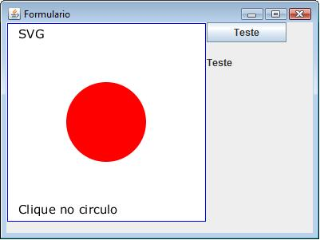

| Nome do Arquivo | Descrição |
| Batik | Biblioteca Java para o SVG. |
| Código fonte | Código fonte do exemplo abaixo. |

| Arquivo: atributo.svg |
| <svg xmlns="http://www.w3.org/2000/svg" version="1.1" width="250" height="250"> <script language="JavaScript"> <![CDATA[ function circle_click() { var circle = document.getElementById("circulo"); var raio = circle.getAttribute("r"); if (raio == 50) { circle.setAttribute("r", 100); } else { circle.setAttribute("r", 50); } } ]]> </script> <rect x="1" y="1" width="248" height="248" fill="none" stroke="blue"/> <circle onclick="circle_click()" id="circulo" cx="125" cy="125" r="50" fill="red"/> <text id="texto" x="15" y="20" font-family="Verdana" font-size="15">SVG</text> <text x="15" y="240" font-family="Verdana" font-size="15">Clique no circulo</text> </svg> |
| Arquivo: SVGTeste.java |
import javax.swing.*;
import java.awt.*;
import java.awt.event.*;
import java.io.*;
// import java.net.URL;
import org.apache.batik.swing.JSVGCanvas;
import org.apache.batik.dom.svg.SAXSVGDocumentFactory;
import org.apache.batik.util.XMLResourceDescriptor;
import org.apache.batik.swing.svg.SVGLoadEventDispatcherAdapter;
import org.apache.batik.swing.svg.SVGLoadEventDispatcherEvent;
import org.apache.batik.script.Window;
import org.w3c.dom.*;
import org.w3c.dom.events.Event;
import org.w3c.dom.events.EventListener;
import org.w3c.dom.events.EventTarget;
public class SVGTeste {
private JButton botao_1;
public JFrame frame;
private JLabel label_1;
public JSVGCanvas canvas;
Document document;
Window window;
public SVGTeste() {
frame = new JFrame();
frame.setTitle("Formulario");
frame.setSize(400,300);
frame.setLocation(50, 100);
Container ct = frame.getContentPane();
ct.setLayout(null);
canvas = new JSVGCanvas();
File rx = new File("atributo.svg");
// Forces the canvas to always be dynamic even if the current
// document does not contain scripting or animation.
canvas.setDocumentState(JSVGCanvas.ALWAYS_DYNAMIC);
canvas.addSVGLoadEventDispatcherListener
(new SVGLoadEventDispatcherAdapter() {
public void svgLoadEventDispatchStarted
(SVGLoadEventDispatcherEvent e) {
document = canvas.getSVGDocument();
window = canvas.getUpdateManager().getScriptingEnvironment().createWindow();
Element saida = document.getElementById("circulo");
EventTarget t = (EventTarget)saida;
t.addEventListener("click", new OnClickSaida(), false);
}
});
canvas.setURI(rx.toURI().toString());
canvas.setBounds(0,0,250,250);
ct.add(canvas);
botao_1 = new JButton("Teste");
botao_1.setBounds(251,0,100,25);
ct.add(botao_1);
label_1 = new JLabel("Teste");
label_1.setBounds(251,40,150,20);
ct.add(label_1);
Image Icone = Toolkit.getDefaultToolkit().getImage("icon.gif");
frame.setIconImage(Icone);
frame.setVisible(true);
botao_1.addActionListener(new ActionListener() {
public void actionPerformed(ActionEvent e) {
jTesteEntrada();
}});
frame.addWindowListener(new WindowAdapter() {
public void windowClosing(WindowEvent e) {
System.exit(0);
}});
}
public class OnClickSaida implements EventListener {
public void handleEvent(Event evt) {
jTesteSaida();
}
}
public void jTesteEntrada(){
Element circle = document.getElementById("circulo");
String circ = circle.getAttribute("stroke-width");
if (circ.equals("5")) {
circle.setAttribute("stroke", "#00FFFF");
circle.setAttribute("stroke-width", "10");
} else {
circle.setAttribute("stroke", "#0000FF");
circle.setAttribute("stroke-width", "5");
}
repintar();
}
public void jTesteSaida(){
if(label_1.getText().equals("Teste")){
label_1.setText("SVG");
} else {
label_1.setText("Teste");
}
}
public void repintar(){
canvas.getUpdateManager().getUpdateRunnableQueue().invokeLater(new Runnable() {
public void run() {
canvas.repaint();
}
});}
public static void main(String[] args) {
new SVGTeste();
}
} |
| Arquivo: java_comp.bat |
| C:\PROGRA~1\Java\JDK16~1.0_1\bin\javac -classpath batik.jar SVGTeste.java |
| Arquivo: java_exec.bat |
| java -classpath batik.jar; SVGTeste |